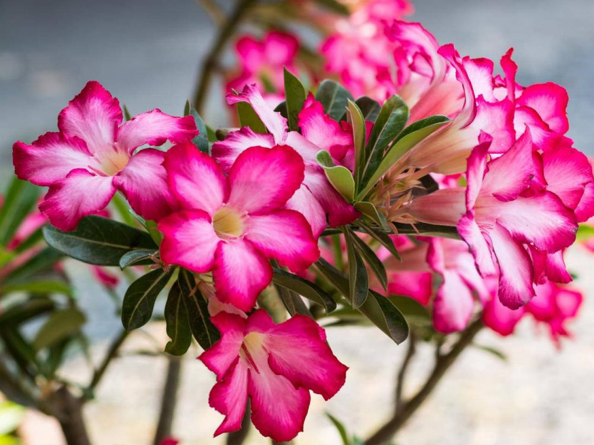

Lilies
Lilies most commonly mean devotion or purity, though meaning can vary by type of lily, culture, and color . Because of the Greek myth of Hera and Zeus, lilies are associated with rebirth and motherhood.
Carnations
In general, carnations are meant to signify love, fascination, distinction, protection, healing, and strength. However, different coloured carnations also have different symbolism as well.
Orchids

The most highly coveted of ornamental plants the delicate, exotic and graceful orchid represents love, luxury, beauty and strength. ... The flower symbolism associated with the orchid is love, beauty, refinement, many children, thoughtfulness and mature charm.
Desert Rose
Favourite flower Since the desert rose plant is strong and adaptable to harsh climatic conditions, it is a symbol of strength, persistence and resilience. it is also a symbol of hope during the dry times..
Yellow hHbiscus
hibiscus flowers also symbolize romantic love and affection. These flowers are the perfect gift for a lover. And if you're single, they are considered good luck for bringing more romance into your life and for helping you find your soul mate.